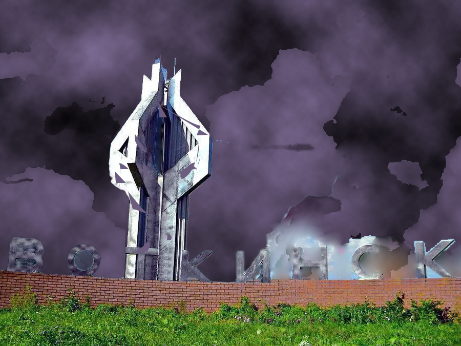
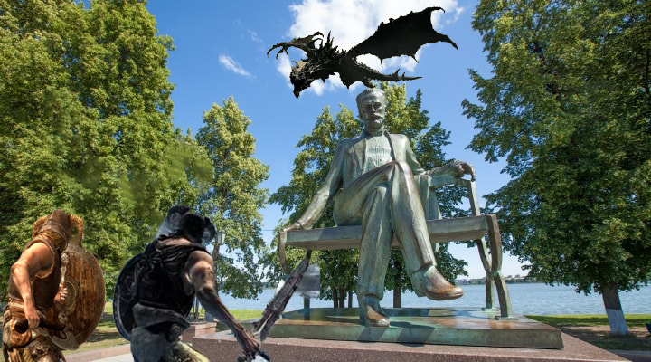
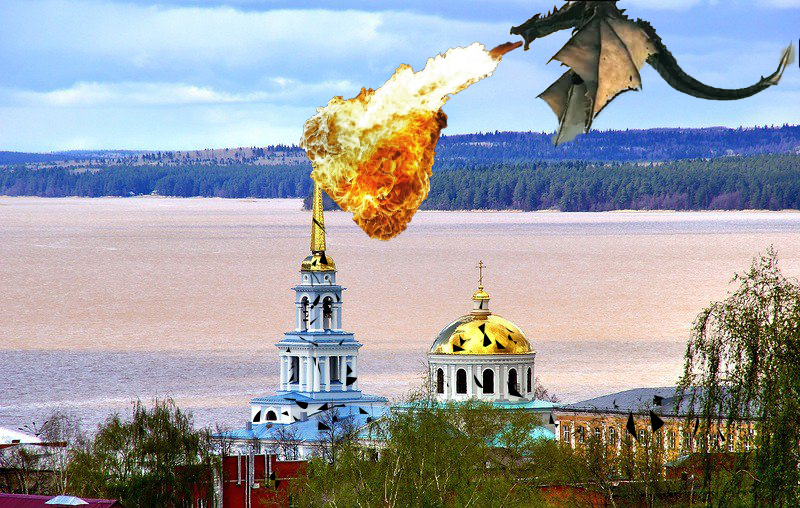

Открытое письмо разрaботчикaм Skyrim
Дорогие разработчики игры Skyrim,мы придумали вам идею сделать в новой версии игры города нашей планеты мы предлагаем вам сделать город России-Воткинск
Дорогие разработчики игры Skyrim,мы придумали вам идею сделать в новой версии игры города нашей планеты мы предлагаем вам сделать город России-Воткинск
Карта №1: Обелиск города Воткинска
Геопозиция Карта №2: Монумент Ульфрику, королю народов (разработчики, помогите придумать имя, если не нравится).
Геопозиция Карта №3:Церковь Святого Ульфрика
Геопозиция Дорогие разработчики игры Skyrim, если вы не знаете русского языка, пожалуйста, ознакомьтесь с английской версией сайта.